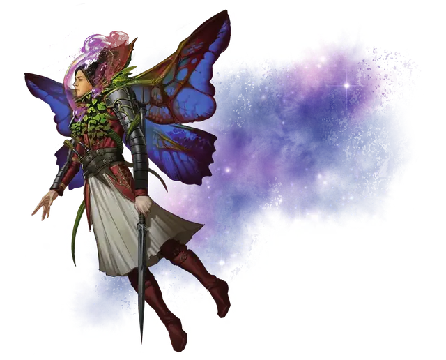

Бродяга
Gadabout
Среднее Растение, без мировоззрения

Класс Доспеха 11 (природный доспех)
Хиты 11 (2к8 + 2)
Скорость 10 футов, летая 60 футов (парит)
| мод | спас | ||
|---|---|---|---|
| СИЛ | 12 | +1 | +1 |
| ЛОВ | 10 | +0 | +0 |
| ТЕЛ | 14 | +2 | +2 |
| мод | спас | ||
|---|---|---|---|
| ИНТ | 1 | −5 | −5 |
| МДР | 6 | −2 | −2 |
| ХАР | 1 | −5 | −5 |
Уязвимость к урону огонь
Иммунитет к состояниям глухота, испуг, истощение, окаменение, ослепление, очарование, паралич
Чувства слепое зрение 10 футов (слеп за его пределами), пассивное Восприятие 8
Опасность 1/8 (25 опыта)
Бонус мастерства +2
Особенности
Воздушная оболочка. Если у бродяги есть хотя бы 1 хит, он может производить вокруг себя воздушную оболочку, находясь в вакууме. Эта воздушная оболочка может неограниченно долго поддерживать бродягу и еще одно существо в его пространстве.
Необычная природа. Бродяга не нуждается в еде и сне.
Действия
Мультиатака. Бродяга совершает две атаки Ветвями.
Ветвь. . Рукопашная атака оружием: +3 к попаданию, досягаемость 5 фт., одна цель. Попадание: 3 (1к4 + 1) рубящего урона.
Оплетание. Бродяга входит в пространство согласного существа Среднего или Маленького размера в пределах 5 футов и аккуратно оплетает цель своими побегами. Цель становится схваченной (Сл высвобождения 0). Любая попытка цели избежать захвата приводит к тому, что реакцией бродяга перемещается в ближайшее свободное пространство. Схваченная цель определяет, куда передвигается бродяга во время своего хода, и двигается вместе с ним, куда бы он не направился.
Описание
Бродяги — это нежные крылатые существа, которых можно использовать в качестве личного транспорта для путешествий на короткие расстояния по безвоздушной пустоте Дикого космоса. Бродяга обвивает своими ветвями Гуманоида, расправляет крылья бабочки и позволяет своему носителю лететь сквозь пространство в постоянно обновляющейся воздушной оболочке. Листья бродяги производят питательный сироп, который носитель может употребить в отсутствие другой пищи и воды. Один гуманоид может прожить, питаясь этими листьями, до шестидесяти дней.
Бродяга нуждается в солнечном свете и воде. Здоровый экземпляр может прожить до 25 лет. Хотя бродяги предпочитают летать, они также способны медленно ползать по земле.
Эльфы — единственные на сегодняшний день Гуманоиды, научившиеся выращивать бродяг. Бродяги не дают семян, поэтому каждый из них является ценным товаром. Мерканские и доварские торговцы могут продать попавшего к ним в руки здорового бродягу за 2 500 зм или больше.